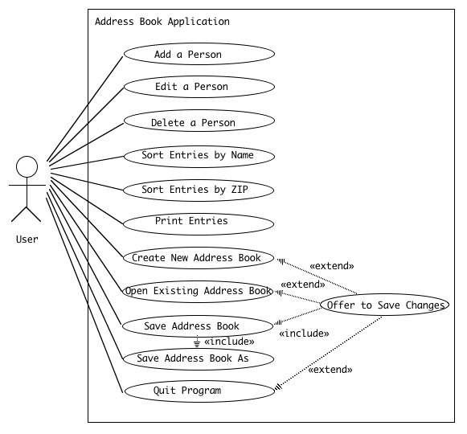

In the following, use cases are listed in the natural order that a user would think of them. In the actual File menu, items that correspond to the various use cases will be listed in the traditional order, which is slightly different.

The Add a Person use case is initiated when the user clicks the "Add" button in the main window. A dialog box appears, with title "New Person", containing fields for the user to fill in the new person's first and last names and other information. The box can be dismissed by clicking either "OK" or "Cancel". If the "OK" button is clicked, a new person is added to the end of the address book, and the person's name is added to the end of the list of names in the main window. If the "Cancel" button is clicked, no changes are made either to the address book or to the main window.
The Edit a Person use case is initiated when the user either highlights a name in the list of names in the main window and then clicks the "Edit" button, or the user double-clicks a name. In either case, a dialog box, with title "Edit person's name", appears containing current information about the person selected, (except the person's name, which appears only in the title). The user can then edit the individual fields. The box can be dismissed by clicking either "OK" or "Cancel". If the "OK" button is clicked, the entry in the address book for the selected person is updated to reflect any changes made by the user. If the "Cancel" button is clicked, no changes are made to the address book.
The Delete a Person use case is initiated when the user highlights a name in the list of names in the main window and then clicks the "Delete" button. A dialog box appears, asking the user to confirm deleting this particular individual. The box can be dismissed by clicking either "OK" or "Cancel". If the "OK" button is clicked, the entry in the address book for the selected person is deleted, and the person's name is deleted from the list of names in the main window. If the "Cancel" button is clicked, no changes are made either to the address book or to the main window.
The Sort Entries by Name use case is initiated when the user clicks the Sort by Name button in the main window. The entries in the address book are sorted alphabetically by name, and the list in the main window is updated to reflect this order as well.
The Sort Entries by ZIP use case is initiated when the user clicks the Sort by ZIP button in the main window. The entries in the address book are sorted by zip code, and the list in the main window is updated to reflect this order as well.
The Print Entries use case is initiated when the user chooses "Print" from the File menu. A save file dialog is displayed, and the user is allowed to choose a file to print the labels to. (If the user cancels the file dialog, the Print operation is canceled.) The current contents of the address book are written out to the specified file (in their current order) in "mailing label" format. No information maintained by the program is changed.
The Create a New Address Book use case is initiated when the user chooses "New" from the File menu. If the current address book contents have been changed since the last successful New, Open, Save, or Save As ... operation was done, the Offer to Save Changes extension is executed. Unless the user cancels the operation, a new empty address book is then created and replaces the current address book. This results in the list of names in the main window being cleared, the current file becoming undefined, and the title of the main window becomes "Untitled". (NOTE: These conditions will also be in effect when the program initially starts up.)
The Open Existing Address Book use case is initiated when the user chooses "Open" from the File menu. If the current address book contents have been changed since the last successful New, Open, Save, or Save As ... operation was done, the Offer to Save Changes extension is executed. Unless the user cancels the operation, a load file dialog is displayed and the user is allowed to choose a file to open. Once the user chooses a file, the current address book is replaced by the result of reading in the specified address book. This results in the list of names in the main window being replaced by the names in the address book that was read, the file that was opened becoming the current file, and its name being displayed as the title of the main window. (If the user cancels the file dialog, or attempting to read the file results in an error, the current address book is left unchanged. If the cancellation results from an error reading the file, a dialog box is displayed warning the user of the error.)
The Save Address Book use case is initiated when the user chooses "Save" from the File menu. (The Save option is grayed out unless changes have been made to the address book since the last New, Open, Save, or Save As ... operation was done.) If there is a current file, the current address book is saved to this file. (If attempting to write the file results in an error, a dialog box is displayed warning the user of the error.) If there is no current file, the Save Address Book As .. use case is done instead. In all cases, the current address book and window list are left unchanged.
The Save Address Book As ... use case is initiated when the user chooses "Save As ..." from the File menu. (The Save As ... option is always available.) A save file dialog is displayed and the user is allowed to choose the name of a file in which to save the address book. (If the user cancels the file dialog, the Save As ... operation is canceled.) The current address book is saved to the specified file, and the file to which it was saved becomes the current file and its name is displayed as the title of the main window. (If attempting to write the file results in an error, a dialog box is displayed warning the user of the error, and the current file and main window title are unchanged.) In all cases, the current address book and window list are left unchanged.
The Quit Program use case is initiated when the user chooses "Quit" from the File menu, or clicks the close box for the main window. In either case, if the current address book contents have been changed since the last New, Open, Save, or Save As ... operation was done, the Offer to Save Changes extension is executed. Unless the user cancels the operation, the program is terminated.
The Offer to Save Changes extension is initiated from within the Create New Address Book, Open Existing Address Book, or Quit program use cases, if the current address book has been changed since the last successful New, Open, Save, or Save As ... operation was done. A dialog box is displayed, informing the user that there are unsaved changes, and asking the user whether to save changes, not save changes, or cancel the operation. If the user chooses to save changes, the Save Address Book Use Case is executed (which may result in executing the Save Address Book As ... Use Case if there is no current file). If the user chooses not to save changes, the original operation is simply resumed. If the user chooses to cancel (or cancels the save file dialog if one is needed), the original operation is canceled.
Page of links for non frames-enabled browsers.